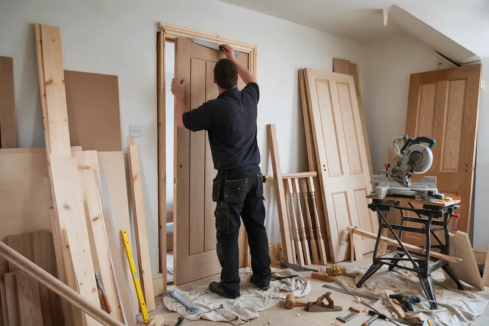

Urgent help
A door that will not shut.
Most joinery can wait a fortnight. One thing cannot: a front or back door that will not close and lock, or a door hanging off its hinges. That is a house that cannot be locked tonight, and it is the one job worth ringing about rather than filling in a form.
A demo number from the range Ofcom keeps for television and film. It rings nobody. No response time is promised anywhere on this site, because any number we printed here would be made up.
First, which problem is it
Joiner, locksmith or glazier.
This is a joiner
- The door has come off its hinges, or a hinge has pulled out of the frame.
- The frame is split round the lock or the keep after a forced entry.
- The door has dropped, swollen or twisted and now fouls the frame so it will not close.
- A panel in the door is broken or the bottom rail has given way.
- The door closes but the latch and the keep no longer line up because something has moved.
This is somebody else first
- The door shuts fine and the key or the cylinder is the problem. That is a locksmith.
- There is broken glass in or beside the door. Get it made safe, then the joinery.
- Water is coming in through the roof or a ceiling, which is not a door job at all.
- It is a communal door in a block of flats, where the management company usually has to send somebody.
- You have been broken into and have not rung the police yet. Do that first and take photographs before anybody fixes anything, for the insurance.
Written for this demo. Grainhurst is not a real firm, so nobody is coming out.
The three we get rung about
What each one actually needs.
Off its hinges
Nearly always the screws rather than the hinge. A heavy door on three screws into a frame that has been painted a dozen times eventually pulls out, taking a plug of soft timber with it. The fix is longer screws into sound timber, or the hinge position repaired with a let in piece of new timber if the hole has gone. A door propped in an opening is not secure, so this one does not wait.
Forced, and the frame is split
A kicked door usually breaks the frame at the keep rather than the lock itself, because that is the weakest point. It can nearly always be repaired rather than replaced: the split timber cut out, new timber let in, and the keep reinforced into solid timber behind it. Photographs first for the insurance, then make it secure, then do it properly.
Swollen and binding
The least urgent of the three, unless it means the door cannot be locked. A door that has taken up water swells across its width and catches at the lock side or the head. The temptation is to plane it straight away, which leaves you with a draughty gap in July. If it can be made to shut and lock for now, that is better, and the real fix happens when the timber has dried back.

Generated photoGenerated for this demo. Not a photograph of a real job.
Why we will not put a time on this page
Every firm you ring will say they can be there quickly. The honest answer is that it depends on where the van is, what is already on and how bad your door actually is. A plain number printed on a web page covers none of that, so there is not one here.
What you should get on the phone instead is three straight answers: whether this is a joiner's job at all, roughly when somebody could be there, and what you can do in the meantime. If a firm will not give you that on the phone, ring another one.
What to do while you wait
If the door will close but not lock, a screw or two through into the frame will hold it for one night and takes a minute to remove. If it will not close at all, the opening wants boarding across properly rather than propping. If you have been broken into, photograph everything before anything is touched, because the insurer will ask and a repaired frame tells them nothing.
Do not force a swollen door shut by leaning on it. That is how a frame splits and a cheap job becomes an expensive one.
Making it secure is not the same as finishing it
There is a difference between a door made to shut and lock tonight and a job finished properly. Sometimes they are the same visit. More often the first visit makes the house secure and the real repair follows once a door, a section of frame or the right ironmongery has been got hold of.
You should be told plainly which one you have just had, what is temporary, and what is still outstanding. On a real site this is the page where that is written down so nobody has to take it on trust from a stranger at the door.
Insurance, briefly
After a break in, most policies want the damage recorded and want a repair rather than an upgrade. A joiner's invoice that says what was found and what was done is worth having. We are not insurance advisers and will not pretend to be, so read your own policy or ring the insurer before anybody starts.
Questions
Asked at the bad moment.
Can you come out today?
On this demo nobody can, because the firm is not real and the number rings nobody. On a real site the answer depends on where the van is and what is already booked.
What a real firm should do is ask you three questions on the phone, whether the door closes, whether it locks and what has actually broken, and then tell you a straight yes or no rather than a maybe that leaves you waiting in.
Can the frame be repaired or does it all have to come out?
Repaired, nine times out of ten. A forced door splits the frame at the keep, which is one small area of timber. That gets cut out back to sound timber, a new piece let in and glued, and the keep refitted into solid timber rather than into a filled hole.
A whole new frame is a much bigger job that disturbs the plaster and sometimes the brickwork, so it is worth a proper look before anybody writes it off.
Will it be as secure as it was?
Usually better, because the repair goes back into sound timber with longer screws than were in it originally, and the weak spot that failed is the bit being rebuilt.
What a joiner cannot do is make a lightweight door into a strong one. If the door itself is thin or hollow, we will tell you so, and whether a different door is the honest answer rather than another repair.
Do you board up?
Yes, where a door or a section of frame has to be ordered and the opening cannot be left. Boarded across properly and fixed into sound timber, not propped.
It is meant to last days rather than months, and it is written down as temporary so nobody is in any doubt about what is still outstanding.
It is a fire door in a flat. Does that change things?
Yes. A fire door is a specific door for a specific opening with specific ironmongery, and the maker's instructions govern how it goes in. We will make the flat secure, then fit the right door to those instructions.
In a block of flats there is usually a management company or a landlord who has to be told and who may have to arrange it. We will say that rather than quietly fitting something and leaving you to explain it later.
Door that will not shut?
Ring rather than fill in a form. Tell us whether it closes, whether it locks and what has broken.